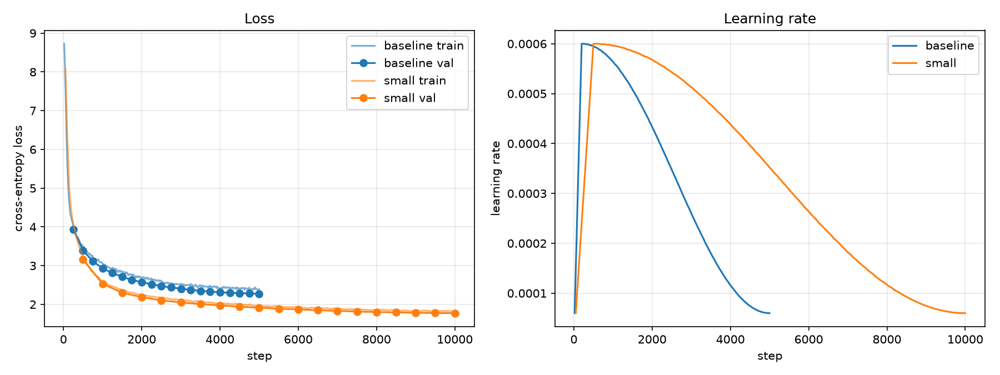

A Small Autoregressive Transformer Language Model Built from Scratch for Short Story Generation
A Small Language Model Built from Scratch for Children's Story Generation
Project 1 tutorial
We built a small GPT-style model ourselves, trained it on a computer's CPU with simple children's stories (TinyStories), and measured how good it is. It now writes short stories on its own. In Project 2 it will be the teacher that a smaller model learns from.
This page explains every step: what we did, why, what result we got, and how that result told us what to do next.
The one idea behind everything
The model learns one skill only: guess the next word from all the words before it.
Once upon → a
Once upon a → time
Once upon a time → thereIf you can guess the next word very well, again and again, you can write a whole story.
The pipeline (the order we built things in)
Start here: the basic ideas
This part explains, one by one, the words used in the project. Each idea has a figure, and most figures can be played with: press the buttons, move the sliders, or point at things.
The numbers in the figures are real. They come from our trained model
(teacher/teacher.pt), not from a textbook. Only the overfitting picture in idea 9 is a drawing.
Idea 1 What is a language model?
A program that guesses the next piece of text.
A language model reads some text and gives a probability (a chance, from 0% to 100%) to every possible next word. To write, it picks one word, adds it to the text, and guesses again. Doing this one word at a time, where each new guess uses everything written so far, is called autoregressive.
the "finish my sentence" game. If I say "Once upon a…", you're almost sure the next word is "time". Our model has played this game about 164 million times while reading stories.
Idea 2 Tokenizer
Text → small pieces → numbers.
A computer can't read letters, only numbers. A tokenizer cuts the text into pieces called tokens and gives each piece an ID number. Our tokenizer knows 8,192 different tokens. A common word is usually one token; a rare or made-up word is split into smaller pieces.
The sign ␣ means "a space before this word". " dog" (with a space) and "dog" are different
tokens.
How were the 8,192 pieces chosen? With BPE (Byte-Pair Encoding). Start with single letters. Find the pair of neighbours seen most often in the training stories and glue it into one new piece. Repeat thousands of times. Common words end up as one piece.
Special tokens are signs, not words:
The model learns to write <EOS> when a story is finished. That is how it knows when to stop.
Idea 3 Number sequences (training examples)
One long line of numbers, cut into windows; the answer is always "the next one".
Every story is turned into tokens and wrapped as <BOS> story <EOS>. All the stories
are joined into one very long line (372 million tokens for all the stories). The line is cut into
windows of equal length (256 in our project, 8 here so it fits on the screen).
From each window we make an input and a target. The target is the input shifted by one, so at every position the correct answer is simply the next token.
<EOS> <BOS> signs tell the model where one story stops
and the next begins.Idea 4 Embedding: a token becomes a list of numbers
An ID number says nothing about meaning. An embedding does.
An ID like 645 for " dog" is just a label. So the first layer of the model swaps each ID for a list of 384 numbers, called its embedding. At first these numbers are random. Training slowly moves them until words that are used in similar ways get similar numbers.
Idea 5 Transformer: the model's body
A stack of the same block, six times. Click any box to read what it does.
The Transformer is the design used by GPT and almost all modern language models. The numbers flow from the top of this picture to the bottom. In each block, the words first listen to each other (attention), then each word thinks on its own (MLP).
Idea 6 Attention and the causal mask
Each word decides which earlier words matter to it, and can never see later words.
To understand "She", the model must find who "she" is. Attention lets each token give a share of its focus to every earlier token (the shares add up to 100%). The causal mask blocks the future: a token may look only at itself and the tokens before it. Without the mask, the model would just copy the answer during training.
Idea 7 Parameters
The 13.9 million numbers that training adjusts.
A parameter is one adjustable number inside the model, like one knob on a giant mixing desk. All the embeddings, attention and MLP layers are made of them. Our model has 13,891,584. Training means turning all these knobs, a tiny bit at a time, until the guesses get good.
teacher.pt.Idea 8 Training and loss
Guess, check, measure the error, adjust a little. Repeat 10,000 times.
One training step is a loop of four actions. The loss measures how surprised the model was by
the true next token: loss = −ln(probability given to the true token). If the model gave the true
token 100%, the loss is 0. The less it expected the token, the higher the loss.
| The model gave the true token… | Loss |
|---|---|
| 100% (completely sure, and right) | 0.00 |
| 50% | 0.69 |
| 10% | 2.30 |
| 1% | 4.61 |
| 1 in 8,192 (a pure random guess) | 9.01 |
Idea 9 Train, validation, test, and overfitting
Three separate piles of stories, each with one job.
The textbook. The model learns from these.
The practice exam. Used to check progress and pick the best saved model.
The final exam. Used once, only for the final score.
Overfitting means memorising instead of learning. It's like a student who memorises last year's answers: perfect on the practice questions, lost on new ones. You can see it in the curves when train loss keeps falling but validation loss turns up.
Idea 10 Perplexity
"How many tokens is the model choosing between?" Lower is better.
Perplexity = eloss (e ≈ 2.718), using the average loss over all the test tokens. It turns the loss into a number that is easier to picture. A perplexity of 6 means the model is, on average, as unsure as if it were picking between 6 equally likely tokens. It can't be lower than 1 (always sure and right).
Idea 11 Decoding: how the next word is picked
The model gives the chances. The decoding rule makes the choice.
The model only gives probabilities. A separate rule picks the token, and the same model writes very different stories with different rules:
| Rule | How it picks | In our tests |
|---|---|---|
| Greedy | always the most likely token | safe but loops ("You are not nice. You are not nice.") |
| Temperature | random, by probability; low T = sharper (safer), high T = flatter (wilder) | T 1.0: the most made-up words |
| Top-k | random, from only the k most likely tokens | good |
| Top-p | random, from the smallest group of top tokens whose chances add up to p | top-p 0.95 was best |
Idea 12 Measuring the stories
Perplexity scores the guesses. These scores check the written stories.
| Measure | What it means | Real stories | Teacher, top-p 0.95 |
|---|---|---|---|
| Distinct-2 | different word pairs ÷ all word pairs (variety; 1.0 = no pair ever repeats) | 0.764 | 0.742 |
| Repetition (Rep-4) | repeats 4-word phrases more than 95% of real stories do | 5% | 2% |
| EOS rate | the story ends by itself with <EOS> | — | 92% |
| Made-up words | words never seen in the training stories | 0.02% | 0.04% |
| Speed | tokens written per second / seconds per story | — | 141/s, 1.4 s |
… They did not hear the door open. They did not hear the door open. …
Idea 13 Checkpoint, teacher and student
What happens to the model next.
A checkpoint is a saved copy of the model's parameters, like a save point in a game. We saved one every 1,000 steps and kept the best one as the teacher.
In Project 2 (knowledge distillation), a smaller student model learns from the teacher. It doesn't learn only the single true word. It learns the teacher's whole set of chances ("girl 68%, boy 19%, bird 2%…"), which carries much more information: it tells the student that "boy" was also a good answer and "table" was not.
Final results at a glance
We trained two models. The baseline is a small first try. small is the real target model and the teacher for Project 2.
| Baseline | small (teacher) | |
|---|---|---|
| Shape | 4 layers, width 256 | 6 layers, width 384 |
| Parameters | 5.32M | 13.89M |
| Training stories | 100,000 | 1,772,187 (all) |
| Training time | 1.0 h | 9.9 h |
| Test perplexity | 9.68 | 5.74 (41% lower) |
| Speed (top-p 0.95) | 266 tokens/s | 141 tokens/s |
| How the stories read | loose, broken sentences | fluent, but the plot drifts |
In one sentence: the model writes fluent sentences and finishes its stories, but it can't keep characters and facts straight across a whole story.
Decision map: how each result led to the next step
A project like this is a chain of small decisions. Each phase answers one question. The answer tells you what to do next, or that you have to go back and fix something first.
| # | Question we asked | What the result said | So we decided… |
|---|---|---|---|
| 1 | Can this PC train a model? | The CPU works; the AMD GPU would need a lot of setup | Start on CPU, look at the GPU again only if training is too slow |
| 2 | Is the data clean? | 15% duplicates, 30% of validation also in train, no test set | Clean the data and split validation into validation + test |
| 3 | Does the tokenizer lose anything? | Exact round trip, 0 unknown tokens | Use it as it is, with 8,192 tokens |
| 4 | Are inputs and targets lined up? | The target is the input shifted by one, and the test passes | The data is ready for the model |
| 5 | Is the model built correctly? | Untrained loss 9.09 ≈ random guessing 9.01 | The model is correct, so build attention next |
| 6 | Can the model cheat by seeing the future? | 3 tests pass, and fail when the mask is removed | Attention is safe, so choose a size |
| 7 | How big a model, and on what data? | small takes ~9 h; 100K stories would be repeated 8× | Train the baseline first, then small on all the stories, overnight |
| 8 | Did training work? | Validation loss fell at every check, with no overfitting | Score both models properly |
| 9 | How good is it, really? | Test perplexity 5.74 against 9.68 | small is clearly better, so look at its stories |
| 10 | Can it write a story? | Yes, but greedy loops and sampling makes slips | Compare the decoding methods carefully |
| 11 | Which way of picking words is best? | top-p 0.95 has no weak point | Make top-p 0.95 the default |
| 12 | Is the full report trustworthy? | The speed check was wrong, so we fixed it | small is good enough and fast enough to be the teacher |
| 13 | What mistakes does it make? | Mostly meaning (88% contradictions), not grammar | Write down its limits for Project 2 |
| 14 | Can someone else use it? | It works outside the project and gives the same score | Project 1 is finished |
Environment setup
What and why
Before cooking you check the kitchen. Here the "kitchen" is Python plus PyTorch, the library that does the maths (arrays of numbers called tensors, and gradients).
a cook checking the oven and the knives before starting a big meal.
What we did
python scripts/env_report.pyThis records the computer's details in results/metrics/env_report.json and runs a tiny
training test.
Result
- Windows 11, Python 3.12.10, PyTorch 2.14.1 (CPU version).
- CPU: Intel Core Ultra 7, 24 threads, 64 GB of memory.
- GPU: AMD Radeon RX 9060. It needs ROCm, which takes a lot of setup on Windows.
- Tiny test: the loss went down from 6.26 to 0.54, so learning works.
How we decided the next step
Setting up the GPU could have taken days. The CPU already works, so we chose to start on the CPU and come back to the GPU only if training turned out too slow (we checked this again in Phase 7). The tools work, so next we need data.
Get TinyStories
What and why
TinyStories is about 2.1 million short, simple stories, made to test whether small models can learn to write. The rule here is: always look at your data before training on it.
a teacher reading the textbook before giving it to the class, to find torn pages and repeated chapters.
What we did
python scripts/inspect_data.py # download and look
python scripts/clean_data.py # clean and splitResult: we found three problems
- 15% of the training stories were exact duplicates.
- 30% of the validation stories were also in the training set. This is a "leak": the model would be tested on stories it had already seen, so its score would look better than it really is.
- 1.2% of the stories were cut off in the middle of a sentence.
| Cleaning step | Stories left | Removed |
|---|---|---|
| Raw | 2,119,719 | |
| Remove empty | 2,119,489 | 230 |
| Remove cut-off (under 20 words or no ending) | 2,094,957 | 24,532 |
| Remove duplicates | 1,778,710 | 316,247 |
| Remove stories that are also in validation | 1,772,187 | 6,523 |
We also made a test set. TinyStories has no test split, and the validation set gets used during training to choose the best model. So we split the 21,990 validation stories into two fixed halves:
| Set | Stories | Used for |
|---|---|---|
| validation | 10,995 | checking progress during training, choosing the best model |
| test | 10,995 | only for the final score; never used to make a choice |
validation is the practice exam you study with; test is the real exam you see only once.
How we decided the next step
The leak and the duplicates would have made every later number wrong. So we cleaned first, before building anything. Now train, validation and test share 0 stories, and every later score can be trusted. Next, text has to become numbers.
Build the tokenizer
What and why
A model only understands numbers. A tokenizer cuts text into pieces (tokens) and gives each piece an ID. We used BPE: it starts from single letters and keeps joining the most common pairs. In the end, common words are one token and rare words are split into pieces.
writing shorthand. "the" is so common it gets its own symbol, while a rare word is spelled out in pieces.
"The little boy played with his dog."
→ The │ Ġlittle │ Ġboy │ Ġplayed │ Ġwith │ Ġhis │ Ġdog │ .
→ [1607, 399, 527, 768, 347, 353, 645, 17] (Ġ means "a space before")What we did
python scripts/train_tokenizer.py --n_stories 100000 --vocab_size 81928,192 tokens in total. Four of them are special: <PAD>=0, <UNK>=1 (unknown),
<BOS>=2 (story begins), <EOS>=3 (story ends).
Result
| Check | Result |
|---|---|
| Text → IDs → text | exactly the same text back ✅ |
| Unknown tokens in validation | 0 ✅ |
| Tokens per word | 1.20 (efficient) |
| Stories that fit in 256 tokens | 85% |
How we decided the next step
No information is lost (an exact round trip, 0 unknowns), so the tokenizer is good enough to keep. This tokenizer is now fixed forever: perplexity can only be compared between models that use the same tokenizer, and Project 2 must use it too. Next we cut the numbers into training examples.
Prepare training sequences
What and why
Every story becomes <BOS> story <EOS>, and all the stories are joined into one long
list of numbers. The list is cut into windows of 256 tokens. The key trick is to shift by one:
tokens [BOS, The, boy, likes, dogs, EOS]
input [BOS, The, boy, likes, dogs]
target [The, boy, likes, dogs, EOS]At every position the answer is simply "the next token", so one window gives 256 small exercises at once.
a fill-in-the-blank worksheet where every word is the answer to the blank after the words before it.
What we did
python scripts/prepare_data.py --n_train 100000Result
| Train | Validation | Test | |
|---|---|---|---|
| Stories | 100,000 | 10,995 | 10,995 |
| Tokens | 20.8M | 2.27M | 2.26M |
| File size | 40 MB | 4.4 MB | 4.4 MB |
The test confirms the target is the input shifted by one ✅. Each number takes 2 bytes, which is enough for 8,192 IDs.
How we decided the next step
We started with only 100K stories on purpose: mistakes are cheap on small data. The data now has the exact shape the model needs, so next we build the model itself.
Build the Transformer
What and why
We wrote the model ourselves in plain PyTorch, with no downloaded GPT-2. That way we understand every part of it.
Token IDs
→ token embedding + position embedding (each ID → 384 numbers, plus "where am I")
→ [ Transformer block ] × 6
LayerNorm → attention (look at earlier words) → + add input back
LayerNorm → MLP (think about each word) → + add input back
→ LayerNorm → output layer
→ a score for each of the 8,192 tokensa reading group. In each block, every word first "listens" to the earlier words (attention), then "thinks" on its own (MLP). Six blocks are six rounds of discussion.
Result
- Shapes check out: input (8, 256) → output (8, 256, 8192).
- Untrained loss 9.09, close to random guessing: ln(8192) = 9.01. That is exactly right for a model that knows nothing yet.
- After a short trial training run, "One day, a little" →
girl58.8%. Before training the top guess was a random word.
| Config | Shape | Parameters | Size |
|---|---|---|---|
| smoke (bug test) | 2 layers, width 128 | 1.5M | 5.6 MB |
| baseline | 4 layers, width 256 | 5.3M | 20.3 MB |
| small (target) | 6 layers, width 384 | 13.9M | 53.0 MB |
How we decided the next step
The starting loss matched what theory says (about 9.0). If it had been 50, or 0.1, there would be a bug. That told us the model is correct. One part still needed a proof: attention must not be able to cheat.
Causal attention
What and why
When the model guesses word 3, it must not see word 3 or anything after it, or it would just copy the answer. A causal mask hides the future:
Rows are the word doing the looking; columns are the word it can see.
an exam where every question is covered until you answer the one before it.
What we did
python -m pytest tests/test_causal.py -vResult
- All 3 tests pass: the weights on future words are 0, changing future words changes nothing earlier, and the gradient to the future is 0.
- A real example: "Lily has a red ball. She throws it to her dog" and "… She eats a big green apple" give exactly the same predictions on the shared words.
- We removed the mask on purpose, and all 3 tests failed. So the tests really do catch cheating.
How we decided the next step
A test only proves something if it fails when the thing is broken. Once we saw that, we trusted the model. The next question was how big to make it.
Choose the first model size
What and why
Don't start big. Use small models to find bugs fast, then grow. Before a long run, measure the speed and estimate how long it will take.
timing one lap before deciding to run a marathon.
What we did
python scripts/benchmark.py --config configs/small.yaml # and smoke, baselineResult
| Config | Parameters | Tokens/s | Memory | Estimated run | Passes over 100K stories |
|---|---|---|---|---|---|
| smoke | 1.5M | 45,780 | 410 MB | < 1 min | 0.005 |
| baseline | 5.3M | 11,613 | 878 MB | ~1 h | ~2 |
| small | 13.9M | 4,982 | 660 MB | ~9 h | ~8 |
Using all 24 threads was the fastest. Memory is under 1 GB, so RAM is not a limit.
How we decided the next step
- CPU or GPU? The longest run is about 9 hours, which fits overnight. So we stayed on the CPU, and the GPU was not needed.
- How much data? On 100K stories, small would read each story about 8 times and could start memorising. So small gets all 1.77M stories, and sees each story less than once.
- Order: baseline first (1 h, cheap; if something is wrong we find out fast), then small overnight.
Train the model
What and why
batch → model → guesses → loss (how wrong) → backpropagation → AdamW update- Loss: how surprised the model is by the true next word. Lower is better.
- Learning-rate schedule: a short warm-up, then slowly smaller steps (cosine).
- Validation loss: the loss on stories the model never trains on. If train loss falls but validation loss rises, the model is memorising (overfitting).
a student doing practice questions, checking the answer each time, and adjusting a little. Every so often they take a practice exam they have never seen, to check they are really learning and not just remembering answers.
What we did
python -m src.train --config configs/smoke.yaml # 1. does the loss go down?
python -m src.train --config configs/smoke.yaml --resume checkpoints/smoke/model_last.pt --max_steps 300
# 2. can it continue after a stop?
python -m src.train --config configs/baseline.yaml # 3. first real model
python scripts/prepare_data.py --n_train 0 --data_dir data/full # tokenize all stories
python -m src.train --config configs/small.yaml # 4. target model, overnightResult
Baseline: 62 min (the estimate was 59). Validation perplexity went from 51 to 9.71.
small: 593.7 min (9.9 h) with no problems.
| Step | 500 | 1,000 | 2,000 | 4,000 | 6,000 | 8,000 | 10,000 |
|---|---|---|---|---|---|---|---|
| Validation loss | 3.16 | 2.53 | 2.19 | 1.97 | 1.87 | 1.80 | 1.77 |
| Validation perplexity | 23.5 | 12.6 | 8.92 | 7.20 | 6.49 | 6.07 | 5.90 |

After "there was a little", small guesses girl 75.3% and boy 15.7%.
How we decided the next step
- The baseline matched its time estimate, so the 9-hour estimate for small could be trusted.
- Validation loss fell at every check and never rose, so there was no overfitting and no need to stop early.
- The log's 5.90 used only part of the validation set. We needed a proper, full score on the test set.
Perplexity
What and why
Perplexity = eloss. It is roughly "how many words the model is choosing between" at each step. A perplexity of 5.74 means the model is about as unsure as if it were picking from 5–6 equally likely words. Lower is better.
a quiz with multiple choice. Perplexity 100 means guessing among 100 options; perplexity 6 means the model has narrowed it down to about 6.
What we did
python -m src.evaluate --ckpt checkpoints/small/model_best.ptResult
| Test loss | Test perplexity | Validation perplexity | ||
|---|---|---|---|---|
| baseline | 2.2700 | 9.68 | 9.68 | |
| small | 1.7473 | 5.74 | 5.74 |
- small has 41% lower perplexity than the baseline.
- Test and validation agree (5.74 and 5.74), so picking the best model with validation did not "overfit" to it.
How we decided the next step
The numbers say small is clearly better. But a number is not a story. We had to read what it writes.
Text generation
What and why
Writing means repeating one step: get the probabilities → pick a token → add it → repeat, until
<EOS>. The way you pick is the "decoding method":
| Method | How it picks |
|---|---|
| Greedy | always the most likely token |
| Temperature | picks at random by probability; low = safer, high = wilder |
| Top-k | picks at random from only the k most likely tokens |
| Top-p | picks at random from the smallest group of tokens whose probabilities add up to p |
choosing what to eat. Greedy always orders the favourite dish. Top-p picks from the dishes you like enough, and sometimes tries a less usual one.
What we did
python -m src.generate --ckpt checkpoints/small/model_best.pt --prompt "Once upon a time" --method greedy
python -m src.generate --ckpt checkpoints/small/model_best.pt --prompt "Once upon a time" --method top_p --top_p 0.9 --num_samples 3
python scripts/show_decoding.py --ckpt checkpoints/small/model_best.pt --prompt "Tom was sad because"Result
After "Tom was sad because", the model gives he 81.5%, his 13.2%, it 3.3%.
- Greedy gives the same story every time. It is fluent but repeats itself ("didn't know what to do" again and again).
- Top-p gives a different story each time. It has more variety but more slips: a book turns into a "secret recipe", and a made-up word, "pollow", appears.
- Both the variety and the mistakes come from the rare picks (for example "fly" at rank 9, 1.7%).
How we decided the next step
Reading a few stories showed a trade-off: safe methods loop, and random methods make mistakes. A few examples can't settle which method is best, so we needed a fair, measured comparison.
Sampling experiment
What and why
We kept the model and the 8 prompts the same and changed only the decoding method. Then we measured:
- Distinct-2: the share of word pairs that are different (variety). Real stories score 0.764.
- Flagged repetitive: the story repeats 4-word phrases more than 95% of real stories do.
- EOS rate: how often the story ends by itself.
- Made-up words: words that never appear in the training stories.
What we did
python -m src.evaluate --ckpt checkpoints/small/model_best.pt (includes the experiment)
python scripts/madeup_words.py --run baseline --run smallResult (small, 40 stories per setting)
| Setting | Distinct-2 (real 0.764) | Flagged (real 5%) | Ended by itself | Made-up words (real 0.02%) | Verdict |
|---|---|---|---|---|---|
| greedy | 0.586 | 75% | 88% | 0% | too safe: loops |
| temp 0.7 | 0.693 | 25% | 92% | 0.01% | too safe |
| temp 1.0 | 0.777 | 2% | 100% | 0.34% | too wild: made-up words |
| top-k 20 | 0.733 | 8% | 95% | 0.05% | good |
| top-k 50 | 0.726 | 10% | 92% | 0% | good |
| top-p 0.90 | 0.738 | 10% | 92% | 0% | good (close second) |
| top-p 0.95 | 0.742 | 2% | 92% | 0.04% | best balance |
Temp 1.0 looks best on 3 of the 4 numbers, but its stories contain words like "neverld" and "alreadypow". This is why we also read the stories, not just the numbers, and why we added the made-up word measure.
How we decided the next step
We chose top-p 0.95 as the default because it has no weak point: low repetition, variety close to real stories and few made-up words. Then we built one complete report covering quality, writing and speed.
Evaluate the model
What and why
Don't report only perplexity. A good report has three groups: quality (loss, perplexity), writing (repetition, variety, endings) and performance (size, speed, memory, training time). It also records the exact hardware and settings, so someone else can repeat the run.
A problem we found and fixed
Every speed result was marked "not reliable, the PC is busy". The check was counting our own program as "other programs" (it used 18% CPU right after loading the model). We fixed it: the check now subtracts our own use, and measures other programs both before and during the timing.
a scale that includes your own hand while you weigh a parcel. You have to subtract the hand.
Result
| Baseline | small | |
|---|---|---|
| Test perplexity | 9.68 | 5.74 |
| Size | 20.3 MB | 53.0 MB |
| Speed | 266 tokens/s | 141 tokens/s |
| One 200-token story | 0.75 s | 1.42 s |
| Memory (evaluation / training) | 781 MB / 989 MB | 941 MB / 1,438 MB |
| Training time | 1.0 h | 9.9 h |
How we decided the next step
The trade-off: small is 2.6× bigger, 1.9× slower and took 10× the training time. In return it has 41% lower perplexity and stories that read like stories. At 1.4 s per story it is fast enough to be a teacher, so we chose small. The numbers measure repetition and variety, but not whether a story makes sense, so we checked that by hand next.
Error analysis
What and why
Some mistakes only a human reader can see. We read 60 stories and labelled each one using the same strict rules (one slip anywhere counts):
- Contradiction: something clashes with an earlier fact in the story.
- Grammar: a broken sentence or a made-up word.
- Entity: a character changes name, gender or species, or the wrong one speaks.
a teacher marking essays, not with a score but by type of mistake, to find out what to teach next.
What we did
python scripts/error_labels_small.py # writes the labels into error_analysis.csv and counts themResult (small, 60 stories)
| Error | Stories | Example | |
|---|---|---|---|
| Contradiction | 88% | dad is "at work" and "coming home" at the same moment | |
| Entity | 55% | "a little mouse named Tim. Tim was a very obedient cat" | |
| Grammar | 37% | "He liked to be park tomorrow" | |
| Repetition (auto) | 22% | "He liked his mom. He liked his mom." | |
| Incomplete (auto) | 7% | all 4 hit the 512-token limit |
- Only 5 of the 60 stories have no error at all.
- The main weakness is meaning, not language. Sentences are mostly fine, but the model loses track of who is who and what is where.
- The automatic repetition flag was right 11 times out of 13, so it can be trusted.
- Caution: one person did the labelling, so treat these numbers as roughly ±10%.
How we decided the next step
We now know the teacher's limits. In Project 2, a student can't be expected to be more consistent than its teacher. These limits went into the teacher's README, so Project 2 starts with honest expectations. The last step is to pack everything up.
Package as the teacher for Project 2
What and why
Project 2 trains a smaller student to copy this teacher. To compare them fairly, everything about the teacher must be saved, and it must give the same score anywhere.
packing a recipe box: the dish, the exact recipe, the exact ingredients and a photo of what it should look like, so another cook can get the same result.
What we did
python scripts/package_teacher.py # builds teacher/
python teacher/verify_teacher.py # checks it (~3 min)Result
teacher/: 36 files, 63 MB.teacher.ptis 53 MB (the training save was 159 MB; the optimizer's memory was left out because it is only needed to keep training).- It contains the tokenizer and its fingerprint (SHA-256), configs, code, the test data, results, and a list of every file with its fingerprint.
- Two helpers for Project 2:
load_teacher()andnext_token_probs(). - Copied outside the project and checked there: all files are OK, there are 13,891,584 parameters, and the test perplexity is 5.74, exactly as in Phase 9 ✅
- Backup:
C:\Users\home\Backups\project1_teacher_2026-11-06\
How we decided we were done
The goal of this phase was: "someone else can load the teacher and get the same perplexity from these files alone". That was tested and passed. Project 1 is finished. Next comes Project 2: distillation into a smaller student.
Lessons learned (useful for any ML project)
- Look at the data first. The 30% validation leak would have made every score wrong.
- Keep a test set you never use for choices. Then the final score is honest.
- Check against theory. An untrained loss of about ln(vocab size) proves the model is wired correctly.
- Make tests fail on purpose. A test you have never seen fail proves nothing.
- Start small, measure, then scale. A 1-hour baseline made the 10-hour run safe.
- Numbers are not enough. Temp 1.0 had the best numbers but made-up words, so read the output.
- Check your measuring tools. The speed check was counting our own program.
- Change one thing at a time. We kept the flawed prompt so the two models stayed comparable.
- Prove it works somewhere else. The package was checked outside the project.
Glossary
- Token
- a piece of text (a word or part of a word) with a number ID.
- Tokenizer (BPE)
- the tool that cuts text into tokens by joining common letter pairs.
- Parameter
- one number inside the model that training adjusts. small has 13.9 million.
- Transformer
- the model design: blocks of attention + MLP stacked on top of each other.
- Attention
- lets each word look at the earlier words to understand the context.
- Causal mask
- hides future words so the model can't cheat.
- Loss
- how wrong the model's guess was. Lower is better.
- Perplexity
- eloss: about how many words the model is choosing between. Lower is better.
- Overfitting
- memorising the training data instead of learning; validation loss goes up.
- Train / validation / test
- data to learn from / data to check progress with / data for the final score only.
- Checkpoint
- a saved copy of the model at some point during training.
- Decoding
- the rule for picking the next word (greedy, temperature, top-k, top-p).
- Distinct-2
- the share of different word pairs: a measure of variety.
- Teacher / student
- in distillation, a big model (teacher) trains a smaller one (student) to copy it.
Full details: INSTRUCTIONS.md · Teacher
details: teacher/README.md · Plan: docs/Project_1_Small_Autoregressive_LM_Local_PC_Plan.docx